Learning outcomes
By the end of Chapter 3 you should be able to do each of these. The tag shows where it is covered.
- 3.0Define mineral.
- 3.1.1Describe the basic structure of the atom.
- 3.1.2Derive basic atomic information from the Periodic Table of Elements.
- 3.1.3Describe chemical bonding related to minerals.
- 3.2Describe the main ways minerals form.
- 3.3Describe the silicon-oxygen tetrahedron and how it forms common silicate minerals.
- 3.4List common non-silicate minerals in the oxide, sulfide, sulfate, and carbonate groups.
- 3.5Identify minerals using physical properties and identification tables.
How to use this guide
Underlined words are key terms. Click one, or open Key terms at the bottom right, to read and search every definition from this chapter. The animated diagrams stop moving if your device is set to reduce motion.
3.0What is a mineral?
"Minerals" on nutrition labels and medicine bottles are not minerals in the geological sense. The classic geological definition has five parts:
Exceptions. Water and mercury are liquid at room temperature but count as minerals because they were classified before the room-temperature rule was added. Calcite is often made by organisms but counts because it is widespread and geologically important. To fix these inconsistencies the International Mineralogical Association amended the definition:
So the calcite in a living clam's shell is not a mineral, but once the shell is buried and altered by or other geological processes, it is. Natural substances that do not fit the definition, such as coal, pearl, opal, and obsidian, are called .
A contains one or more minerals or mineraloids. The three rock types (covered in later chapters) are igneous (crystallized from molten material), sedimentary (made of products of mechanical weathering, like sand and gravel, and chemical weathering, like things precipitated from solution), and metamorphic (other rocks altered by heat and pressure).
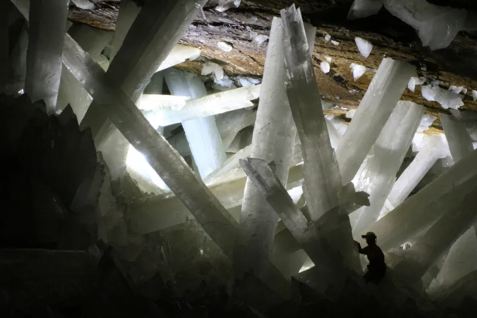
3.1Chemistry of minerals
Rocks are made of minerals, and each mineral has a specific chemical composition. To understand that chemistry, start with the fundamental unit of all matter, the atom.
3.1.1 The atom
Atoms are made of three subatomic particles. The central holds (positive charge) and (no charge). A cloud of negatively charged surrounds it; in a neutral atom the number of electrons equals the number of protons. Protons and neutrons each have a mass number of 1, while an electron has less than 1/1000th of that mass, so almost all of an atom's mass is in the nucleus.
3.1.2 The periodic table of the elements
An is a kind of atom with a specific number of protons, its (oxygen has 8, iron 26). An element cannot be broken down chemically into a simpler form and keeps its own chemical and physical properties. The lists all known elements in order of atomic number; Dmitri Mendeleev made the first one in 1869. Each entry gives a chemical symbol (often from a Latin or Greek name), name, atomic number, and (protons + neutrons, since electrons weigh so little).
Isotopes. Atomic masses on the periodic table are usually not whole numbers, because they average atoms with different numbers of neutrons. are forms of an element with the same number of protons but different numbers of neutrons. For carbon, 98.9% of atoms are carbon-12 (6 protons, 6 neutrons); a few are carbon-13 (7 neutrons); a trace are carbon-14 (8 neutrons).

Of the 118 known elements, the heaviest are short-lived human creations; the heaviest naturally occurring element is uranium (atomic number 92). Just eight elements make up nearly all of the continental crust, and they are the elements found in the common rock-forming minerals.
| Element | Symbol | Abundance |
|---|---|---|
| Oxygen | O | |
| Silicon | Si | |
| Aluminum | Al | |
| Iron | Fe | |
| Calcium | Ca | |
| Sodium | Na | |
| Potassium | K | |
| Magnesium | Mg |
3.1.3 Chemical bonding
Most substances on Earth are of several elements. describes how atoms attach to form them, e.g. sodium and chlorine forming NaCl (table salt). Compounds held together by chemical bonds are called . Subscripts count atoms: O2 is two oxygen atoms, and water (H2O) is two hydrogens covalently bonded to one oxygen.
Most minerals are compounds too. Calcite, CaCO3, has one calcium, one carbon, and three oxygens. The carbon and three oxygens are held by covalent bonds into a negatively charged , carbonate (CO32−), which attracts the calcium ion (Ca2+). In olivine, (Mg,Fe)2SiO4, the comma means Mg and Fe can occupy the same place in the crystal and substitute for each other.
Valence and charge
Electrons sit in shells at different energy levels. The outermost is the , and its electrons take part in bonding. In 1913 Niels Bohr proposed that atoms are more stable when the outer shell is full, so most atoms gain or lose electrons to fill it. In Bohr's model the first shell holds at most 2 electrons and the second and third hold up to 8: the (for hydrogen and helium, a full first shell of 2).
- Columns I and II have 1 and 2 valence electrons and readily give them up. Sodium (row 3, column I: shells 2-8-1) loses its one valence electron, leaving 11 protons and 10 electrons: an ion with charge +1. Column II elements become +2 ions.
- Columns VI and VII have 6 and 7 valence electrons and readily take up electrons, so they often bond with columns I and II.
- Column VIII (18) holds the . Their valence shell is already full (helium with 2), so they are chemically inert and do not bond.
An atom with a net charge from gaining or losing electrons is an . Elements on the left of the table lose electrons and become positive (attracted to the cathode in an electrical device); elements on the right gain electrons and become negative (attracted to the anode). Elements in the center do not consistently follow the octet rule; these are the . Iron is the common example: oxidized Fe3+ tends to color rocks red, and reduced Fe2+ tends to color them green.
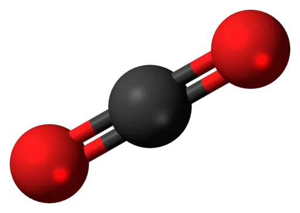
Ionic bonding
(electron-transfer bonds) form by electrostatic attraction between oppositely charged ions: one atom transfers electrons to another so both achieve a full valence shell. One Na+ and one Cl− make sodium chloride, NaCl: the mineral halite, table salt (Figure 3.6). One Ca2+ and two Cl− make calcium chloride, CaCl2. Ionic bonds usually form between a metal and a nonmetal.
Covalent bonding
(electron-sharing bonds) commonly form between nonmetals, which share electrons to complete their valence shells. Oxygen has 6 valence electrons; two oxygen atoms share 2 electrons to make O2. In methane (CH4), carbon needs 4 electrons and each hydrogen needs 1, so each hydrogen shares its electron with the carbon.

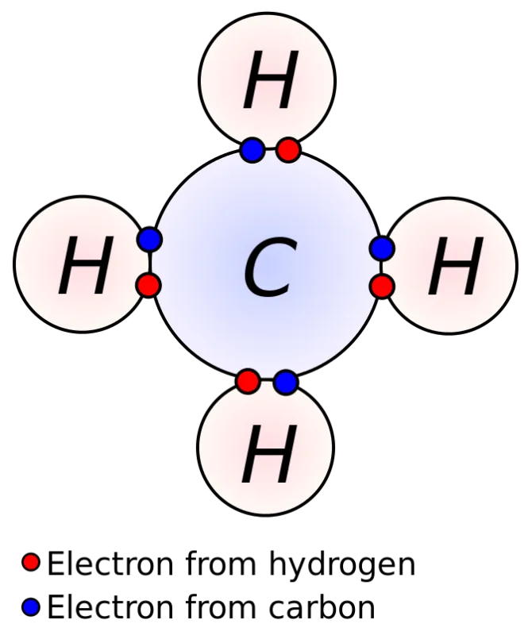
Check yourself: Section 3.1 quiz in the textbook ↗
3.2Formation of minerals
Minerals form when atoms bond together in a crystalline arrangement. Nature does this in three main ways:
3.2.1 Precipitation from aqueous solution
A is made of ions or molecules () dissolved in a , in nature usually water. When halite dissolves, its Na+ and Cl− ions separate and disperse. is the reverse: ions in solution come together to form solid minerals. It depends on ion concentration, temperature, and pressure. The point at which a solvent cannot hold any more solute is . Precipitation can happen when the solution cools, when the solvent evaporates, or when the chemistry changes. At home, it is the mineral crust left on faucets, shower heads, and drinking glasses.
- in Utah formed where mineral-rich springs entered ice-age Lake Bonneville. Now exposed in dry valleys, this porous rock was used by pioneers as natural insulation for their homes.
- The travertine terraces at Mammoth Hot Springs, Yellowstone, formed by calcite precipitating at the edges of shallow spring-fed ponds.
- The Great Salt Lake is nearly eight times saltier than the oceans. Streams bring salt ions in, there is no outlet, and evaporation concentrates the water until it reaches saturation and minerals precipitate as sediment. Mono Lake (California) and the Dead Sea are similar.
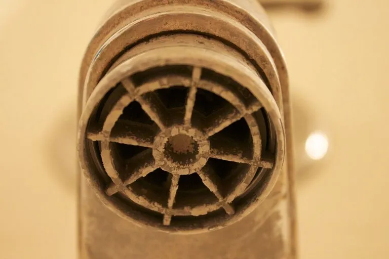

3.2.2 Crystallization from magma
Heat is energy that makes atoms vibrate; temperature measures how intense the vibration is. Violent enough vibration breaks chemical bonds, so crystals melt and release their ions into the melt. is molten rock with freely moving ions. When magma is emplaced at depth, or extruded onto the surface (where it is called ), it cools and mineral crystals can form.
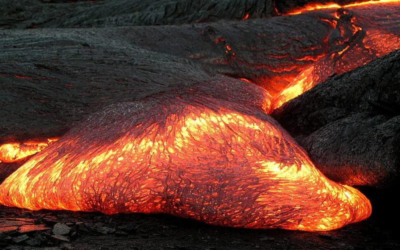
3.2.3 Precipitation by organisms
Many organisms build bones, shells, and body coverings by extracting ions from water and precipitating minerals. The most common is calcite (CaCO3), often precipitated as its aragonite (polymorphs have the same chemical formula but different crystal structures).
- Corals and clams make aragonite or calcite shells. After death these hard parts pile up on the seafloor and may become limestone. Limestone can form without life, but the vast majority forms this way.
- Radiolaria, a kind of zooplankton, make microscopic silica shells that can accumulate into the rock chert.
- Bone is mostly a type of apatite (phosphate group) called hydroxycarbonate apatite.
Remember
By the IMA definition, these biological substances are not technically minerals until the organism dies and its hard parts become fossils.
Check yourself: Section 3.2 quiz in the textbook ↗
3.3Silicate minerals
Minerals are grouped by composition and structure. , the largest group on Earth, make up the vast majority of the mantle and crust. Of the nearly 4,000 known minerals, most are rare; only a few, the , make up most of the rocks we are likely to meet.
Silicates are built around the (SiO4): one small silicon ion (+4) in the center of four large oxygen ions (−2 each) at the corners of a four-sided pyramid. Silicon shares one valence electron with each oxygen in a covalent bond. Because only half of each oxygen's valence electrons are shared, the tetrahedron has a charge of −4 and its corners stay chemically active: they bond to other tetrahedra or to cations such as Al3+, Fe2+,3+, Mg2+, K+, Na+, and Ca2+.
Depending on factors such as the original magma chemistry, tetrahedra can stay isolated or link into chains, sheets, or three-dimensional frameworks. Linked tetrahedra are , bonded covalently through their corner oxygens. Cations fill the spaces in each structure, which creates the different silicate groups.
3.3.1 The dark ferromagnesian silicates: the olivine family
Olivine, (Fe,Mg)2SiO4, is the primary mineral in mantle rock such as peridotite, and is found in basalt. It is characteristically green when unweathered. Iron and magnesium form a : elements with similar properties (here, about the same size and charge) substitute freely for each other in the same place in the crystal. This makes olivine a mineral family, a compositional series between two : all-magnesium forsterite and all-iron fayalite. The relative amounts of Fe and Mg in the parent magma decide which minerals in the series form. Rarer elements, such as manganese, can substitute in small amounts; such substitutions create the great variety of minerals and often change color and other properties.
Olivine is mostly Si, O, Fe, and Mg, so it is a dark-colored (ferro = iron, magnesian = magnesium) or mineral. Ferromagnesian silicates tend to be denser than non-ferromagnesian ones. This matters for plate tectonics: whether a plate subducts depends largely on the density of its rocks, which depends on the density of their minerals.
Olivine's structure is independent tetrahedra, a (orthosilicate); garnet, topaz, kyanite, and zircon are others. Two related structures lead toward the pyroxenes: share one oxygen between two tetrahedra (e.g. pistachio-green epidote), and form rings of tetrahedra (e.g. beryl, emerald, aquamarine, tourmaline).
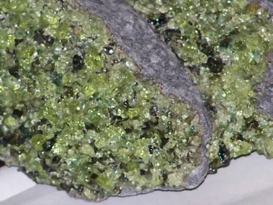

3.3.2 Pyroxene family
are dark ferromagnesian minerals, typically black or dark green, built from single chains of tetrahedra in which each tetrahedron shares two corner oxygens. Metal cations bond the chains together. They occur in mafic igneous rocks (peridotite, basalt, gabbro) and metamorphic rocks (eclogite, blueschist). A common member is augite, (Ca,Na)(Mg,Fe,Al,Ti)(Si,Al)2O6.
The general formula is XZ(Al,Si)2O6, where X = Na, Ca, Mg, or Fe and Z = Mg, Fe, or Al. These ions are similar in size, so many substitutions are possible, but charges must still balance: if Na+ replaces Ca2+, another substitution elsewhere in the crystal must make up the difference. Ionic size matters more than ionic charge for substitution in solid solution series.

3.3.3 Amphibole family
are built from double chains: two pyroxene-like chains joined by sharing a third oxygen on each tetrahedron. They are called . Amphiboles occur in igneous and metamorphic rocks and usually have a long-bladed crystal habit. The most common, hornblende, is usually black, but amphiboles come in many colors. They are found in gabbro, basalt, and diorite, often form the black specks in granite, and make up the metamorphic rock amphibolite.
The formula is complex, generally written (RSi4O11)2, where R stands for many different cations. Amphiboles can also hold hydroxide ions (OH−), picked up from water dissolved in the magma as the crystals grow.

3.3.4 Sheet silicates
In () each tetrahedron shares all three bottom corner oxygens, making sheets with the top corners free to bond with other atoms. Their Si:O ratio is 2:5 (Si4O10). The common types are micas and clays.
- are mostly silica, aluminum, and potassium, and occur in igneous and metamorphic rocks. Dark biotite (more Fe and Mg, so ferromagnesian) is common in granite; light muscovite is a mineral, found in schist.
- In mica, tetrahedral sheets sandwich an octahedral layer of Fe, Mg, or Al. Potassium ions between the "sandwiches" hold them together with weak , so mica splits easily into sheets along the potassium layers.
- are hydrous aluminum silicates formed by weathering, and are important in sedimentary rocks. Kaolinite is like an open-faced sandwich: one silica sheet ("bread") with an aluminum octahedral layer ("spread").
- Other sheet silicates: serpentine and chlorite, in metamorphic rocks.

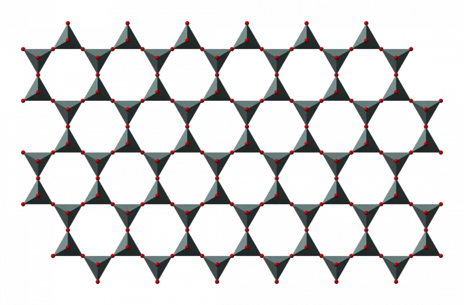


3.3.5 Framework silicates
Quartz and feldspar are the two most abundant minerals in the continental crust. In these () all four corner oxygens are shared, making a 3-D framework. Feldspar is the single most abundant mineral in the crust, about 50% of it. Quartz is the most abundant mineral at Earth's surface, because it resists weathering; it is especially common in (made of mechanically weathered particles like sand and gravel).
- Quartz is pure silica, SiO2. Impurities make varieties such as amethyst, rose quartz, and citrine.
- (potassium feldspar, K-spar), KAlSi3O8, is abundant in felsic rocks of the continental crust. Quartz and orthoclase are felsic minerals (felsic: rich in silica; the word is a contraction of feldspar and silica).
- , (Ca,Na)AlSi3O8, is a solid solution from sodium-rich albite to calcium-rich anorthite, abundant in mafic rocks of oceanic crust.
Why two feldspar families? Potassium ions are much larger than sodium and calcium ions, which are similar in size to each other. The crystal lattice cannot hold both, so feldspars split into orthoclase (K) and plagioclase (Na/Ca). Framework silicates also include the feldspathoids and zeolites.
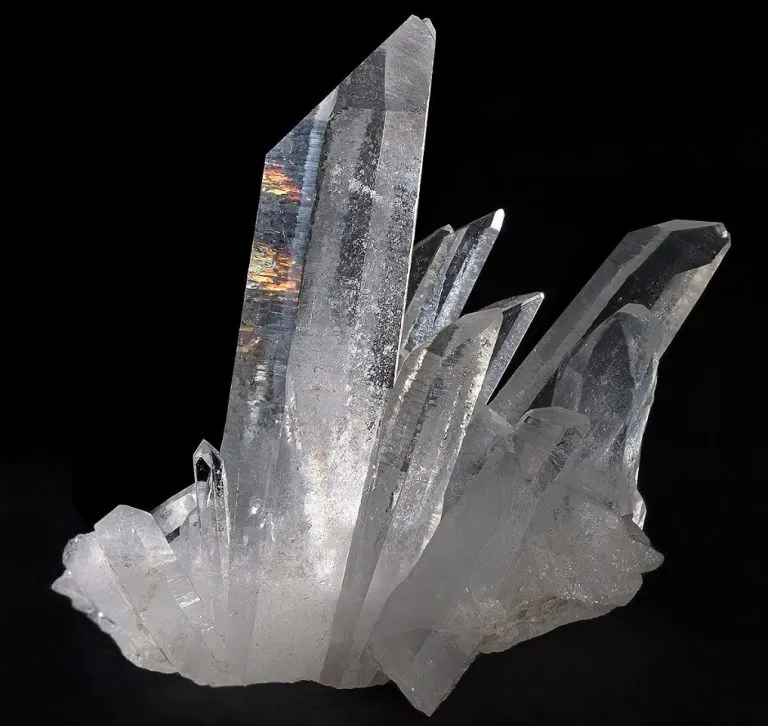
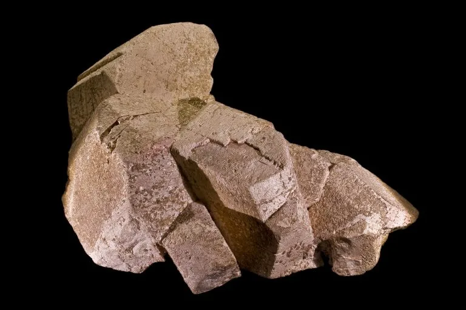
| Structure | Group | Examples | Notes |
|---|---|---|---|
| Isolated tetrahedra | Neosilicates | Olivine, garnet, topaz, kyanite, zircon | Olivine: Fe–Mg solid solution; mafic, dense, green |
| Pairs / rings | Sorosilicates / cyclosilicates | Epidote / beryl, tourmaline | Transitional toward the chain silicates |
| Single chains | Pyroxenes | Augite, diopside | Dark, mafic; XZ(Al,Si)2O6 |
| Double chains | Amphiboles | Hornblende, tremolite | Dark; long-bladed; may contain OH− |
| Sheets | Phyllosilicates | Biotite, muscovite, kaolinite, serpentine, chlorite | Si:O = 2:5; split into sheets |
| 3-D framework | Tectosilicates | Quartz, orthoclase, plagioclase | Most abundant in the continental crust |
Check yourself: Section 3.3 quiz in the textbook ↗
3.4Non-silicate minerals
The crystal structures of have no silica tetrahedra. Many are economically important: they supply metals (copper, lead, iron) and non-metallic products (salt, construction materials, fertilizer).
| Group | Examples | Formula | Uses |
|---|---|---|---|
| Native elements | gold, silver, copper | Au, Ag, Cu | Jewelry, coins, industry |
| Carbonates | calcite, dolomite | CaCO3, CaMg(CO3)2 | Lime, Portland cement |
| Oxides | hematite, magnetite, bauxite | Fe2O3, Fe3O4, mixed aluminum oxides | Ores of iron and aluminum, pigments |
| Halides | halite, sylvite | NaCl, KCl | Table salt, fertilizer |
| Sulfides | galena, chalcopyrite, cinnabar | PbS, CuFeS2, HgS | Ores of lead, copper, mercury |
| Sulfates | gypsum, Epsom salts | CaSO4·2H2O, MgSO4·7H2O | Sheetrock, therapeutic soak |
| Phosphates | apatite | Ca5(PO4)3(F,Cl,OH) | Fertilizer, teeth, bones |

3.4.1 Carbonates
The two most common minerals are calcite (CaCO3) and dolomite (CaMg(CO3)2), found mainly in the sedimentary rocks limestone and dolostone. Some carbonates form by evaporation and precipitation, but most carbonate-rich rock, such as limestone, forms by the of fossilized marine organisms: their calcium carbonate shells and skeletons pile up after death, the soft parts decay, and the hard parts become limestone. Most limestones are made of microscopic creatures.
Salts. Many non-silicates are , compounds made by replacing the hydrogen in natural acids. The most abundant natural acid is carbonic acid (H2CO3), from CO2 dissolved in water; carbonate minerals replace its hydrogen with calcium and/or magnesium. Organisms secrete calcite and its polymorph aragonite from dissolved bicarbonate ions (HCO3−). Halite replaces the hydrogen in hydrochloric acid with sodium, and gypsum replaces the hydrogen in sulfuric acid with calcium. Salts formed by evaporation are .
Birefringence. Calcite splits light into two rays vibrating at right angles that travel at different speeds and paths, so you see a double image through a clear crystal. This is why calcite is used in petrographic microscopes. Calcite also fizzes in dilute hydrochloric acid (Section 3.5.6).
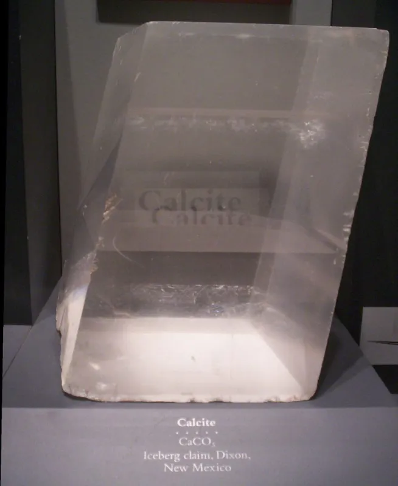
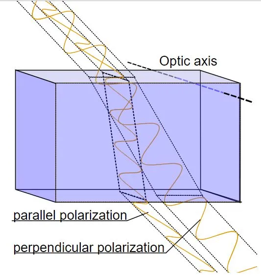
In calcite's structure, each carbon is covalently bonded to three oxygens in a triangular carbonate unit with a charge of −2, which bonds ionically to a Ca2+ ion.
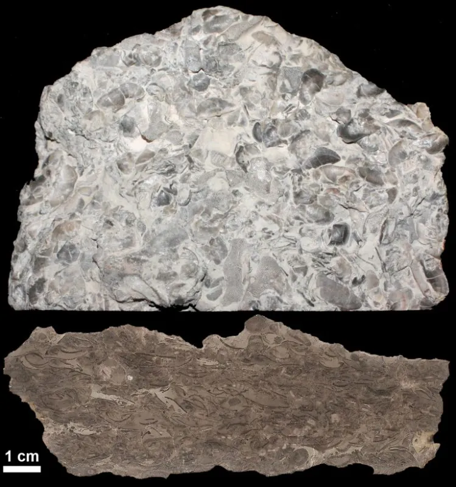
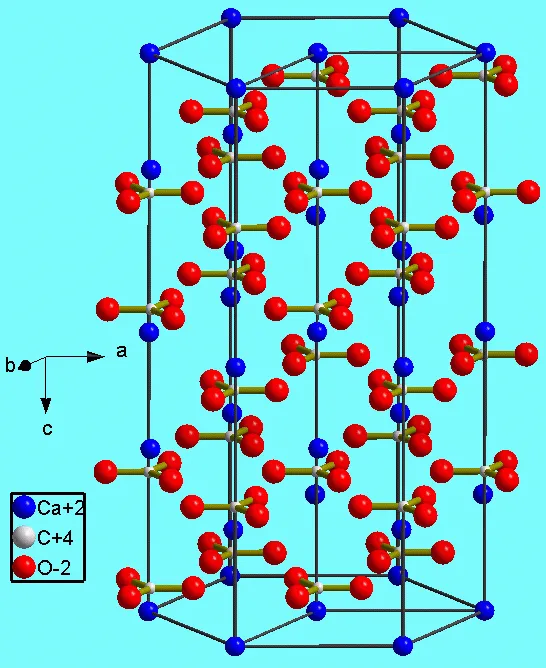
3.4.2 Oxides, halides, and sulfides
After carbonates, these are the most common non-silicates.
Oxides
are metal ions bonded with oxygen. The most familiar is rust: iron oxides (Fe2O3) plus hydrated oxides that form when iron meets oxygen and water. Smelting iron ore produces metallic iron and CO2. Iron oxides make most red rocks red; in Zion National Park and across southern Utah, red sandstone is colorless quartz grains coated and cemented by iron oxide.
Iron oxides include limonite, magnetite, and hematite. Hematite comes in many forms with the same formula, Fe2O3: massive (no external structure), botryoidal (large concentric blobs), specular (shiny metallic crystals), and oolitic (like dull red fish eggs). The chapter calls these forms polymorphs. Other oxides: ice (H2O), bauxite (hydrated aluminum oxides, the ore of aluminum), and corundum (Al2O3, including ruby and sapphire).
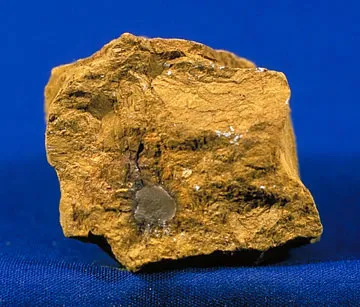
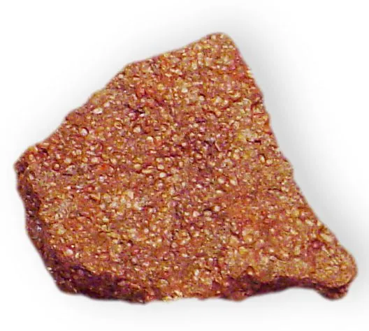
Halides
are halogens from column VII, usually fluorine or chlorine, ionically bonded to sodium or other cations: halite (NaCl), sylvite (KCl), and fluorite (CaF2). They usually form by evaporation of seawater or other isolated water bodies, as at the Bonneville Salt Flats west of the Great Salt Lake (Figure 3.9).


Sulfides
In , metals are bonded to sulfur. Many are important minerals: galena (lead sulfide, the main source of lead), sphalerite (zinc sulfide, main source of zinc), pyrite (iron sulfide, "fool's gold"), and chalcopyrite (iron-copper sulfide, the main copper ore in porphyry deposits like the Bingham mine; Chapter 16). The largest sources of nickel, antimony, molybdenum, arsenic, and mercury are also sulfides.

3.4.3 Sulfates
contain a metal ion, such as calcium, bonded to the sulfate ion (SO42−). Gypsum (CaSO4·2H2O) is used in plaster and drywall, often forms from evaporating water, and holds whole water molecules in its crystal (the "·2H2O"). That differs from amphibole, which holds hydroxide (OH−), water missing a hydrogen ion. Calcium sulfate without water is a different mineral, anhydrite (CaSO4).
3.4.4 Phosphates
have a tetrahedral phosphate unit (PO43−) combined with other ions; arsenic or vanadium sometimes replace phosphorus. They are used in fertilizers, detergents, and paint. The best known is apatite, Ca5(PO4)3(F,Cl,OH), found in teeth and bones. The gemstone turquoise is a copper-rich phosphate that, like gypsum, contains water molecules.

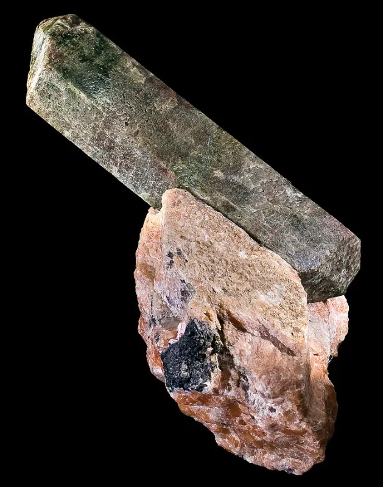
3.4.5 Native element minerals
minerals, usually metals, occur in a pure or nearly pure state. Gold is not very reactive and rarely bonds to other elements. Carbon is found native as graphite and diamond. Mildly reactive elements such as silver, copper, platinum, mercury, and sulfur sometimes occur native, while reactive metals such as iron, lead, and aluminum almost always bond to other elements.


Check yourself: Section 3.4 quiz in the textbook ↗
3.5Identifying minerals
Geologists identify minerals by their physical properties, which they can test in the field without advanced equipment: luster and color, streak, hardness, crystal habit, cleavage and fracture, and some special properties. Most rocks are made of a few common minerals seen as small grains, so think about which properties still work on a small grain surrounded by other minerals.

3.5.1 Luster and color
describes how a mineral's surface looks. Metallic luster looks like shiny metal (chrome, steel, silver, gold); submetallic is duller, like pewter. Nonmetallic luster does not look like metal and can still be shiny, but differently from metal.
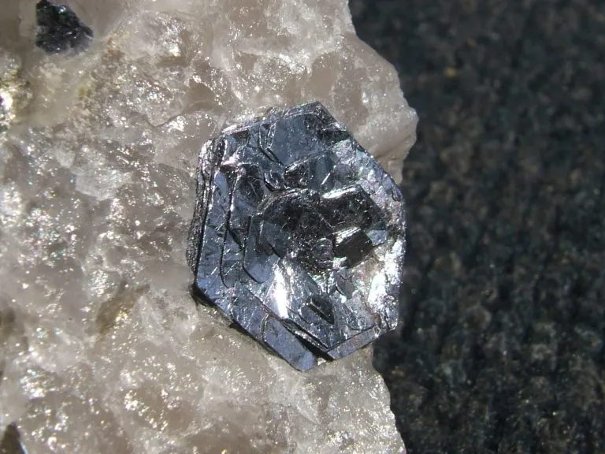
Metallicmolybdenite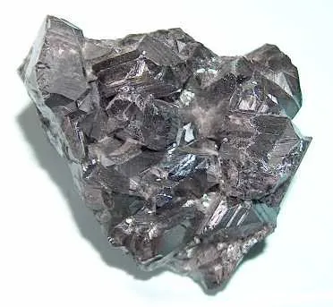
Submetallicsphalerite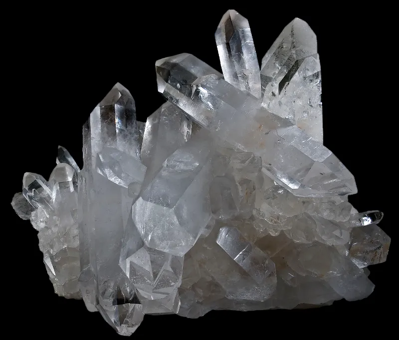
Vitreous (glassy)quartz Earthy (dull)kaolin
Earthy (dull)kaolin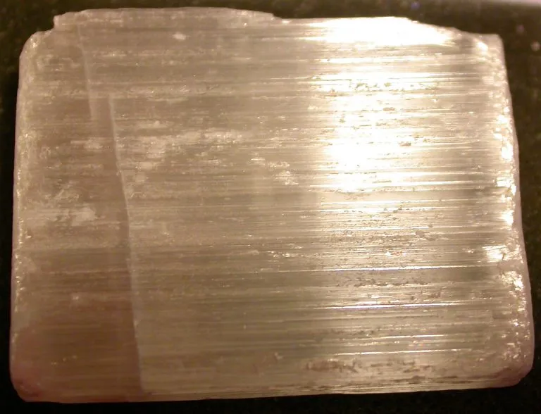
Silkygypsum Pearlymica
Pearlymica
| Luster | Looks like |
|---|---|
| Vitreous / glassy | Shiny, like glass |
| Earthy / dull | Dull, like dried mud or clay |
| Silky | Soft shine, like silk fabric |
| Pearly | Like the inside of a clam shell (mother-of-pearl) |
| Submetallic | Dull metal, like pewter. Usually still counted as metallic; can result from weathering of metallic minerals. |
Color can help but often varies within a mineral family. It depends on the main elements and on impurities, such as manganese, titanium, chromium, or lithium, or even water molecules (which make normally clear quartz milky). Some minerals have one main color: copper makes malachite green and azurite blue. Others, like the feldspars, show a range (pink, white, green, gray) because of solid solutions. With notable exceptions, color is not a definitive property; streak is more reliable.

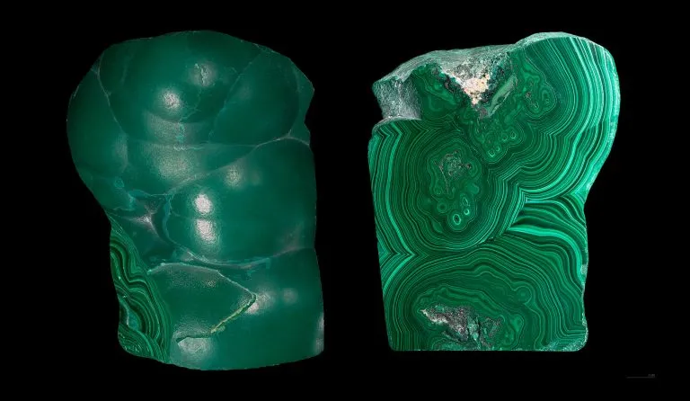
3.5.2 Streak
is the color of a mineral's powder, made by scraping it on an unglazed porcelain streak plate (a field-notebook page works for some minerals). Minerals harder than the plate scratch it instead of leaving a streak; powder those with a hammer and smear the powder. Streak is more consistent than surface color:
- Hematite looks anything from shiny metallic silver to earthy red-brown, but its streak is always reddish brown.
- Pyrite is brassy metallic yellow, but its streak is black to greenish-black.

3.5.3 Hardness
is a mineral's ability to scratch other substances. The , named for German geologist Friedrich Mohs, ranks scratch resistance against ten standard minerals, from 1 to 10. Hardness is set by the strength of the mineral's atomic bonds. The scale is not linear: diamond (10) is about four times harder than corundum (9). A steel pocketknife (5.5) is the usual dividing line between hard and soft minerals on identification keys.
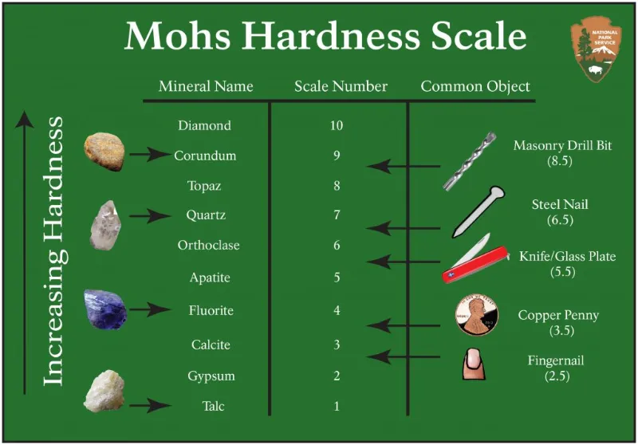
Test kit hardness
- Fingernail: 2.5
- Copper penny: 3.5
- Knife / glass plate: 5.5
- Steel nail: 6.5
- Masonry drill bit: 8.5
Values from the poster in Figure 3.44.
| Hardness | Mineral | Hardness | Mineral |
|---|---|---|---|
| 1 | Talc | 6 | Orthoclase |
| 2 | Gypsum | 7 | Quartz |
| 3 | Calcite | 8 | Topaz |
| 4 | Fluorite | 9 | Corundum |
| 5 | Apatite | 10 | Diamond |
3.5.4 Crystal habit
is how a mineral's crystals typically grow and look. Shapes follow the internal arrangement of atoms (a cubic arrangement gives cubic crystals), but crowding by other minerals can change them:
- : perfectly formed, unconstrained shape with crystal faces (grown freely).
- : partially formed shape.
- : constrained, so the typical habit did not develop.
Some minerals, like garnet, grow crystal faces even when surrounded by other crystals. Some form crystals too tiny to show a habit to the naked eye. Others, like pyrite, have many habits (cubic, dodecahedral, octahedral, massive).
| Habit | Description | Examples |
|---|---|---|
| Bladed | Long and flat | kyanite, amphibole, gypsum |
| Botryoidal / mammillary | Blobby, circular | hematite, malachite, smithsonite |
| Coating / laminae / druse | Small crystals coating surfaces | quartz, calcite, malachite, azurite |
| Cubic | Cube-shaped | pyrite, galena, halite |
| Dodecahedral | 12-sided | garnet, pyrite |
| Dendritic | Branching | Mn-oxides, copper, gold |
| Equant | No long direction | olivine, garnet, pyroxene |
| Fibrous | Thin, very long | serpentine, amphibole, zeolite |
| Layered / sheets | Stacked, very thin, flat | mica (biotite, muscovite) |
| Lenticular / platy | Plate-like | selenite roses, wulfenite, calcite |
| Hexagonal | Six-sided | quartz, hanksite, corundum |
| Massive / granular | No obvious shape; microscopic crystals | limonite, pyrite, azurite, bornite |
| Octahedral | Four-sided double pyramid | diamond, fluorite, magnetite, pyrite |
| Prismatic / columnar | Very long, column-like | tourmaline, beryl, barite |
| Radiating | Grow from a point and fan out | pyrite "suns", pyrophyllite |
| Rhombohedral | Like slanted cubes | calcite, dolomite |
| Tabular / blocky / stubby | Sharp-sided, no long direction | feldspar, pyroxene, calcite |
| Tetrahedral | Three-sided pyramids | magnetite, spinel, tetrahedrite |
 Bladedkyanite
Bladedkyanite- Botryoidalmalachite
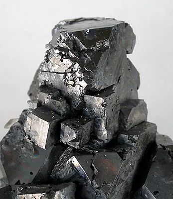
Cubicgalena Dodecahedralpyrite
Dodecahedralpyrite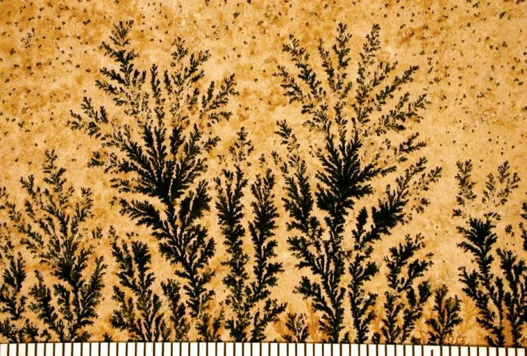
DendriticMn-oxides Prismatictourmaline
Prismatictourmaline- Hexagonalquartz
 Twinnedstaurolite
Twinnedstaurolite
Striations and twinning. are parallel light and dark lines on a crystal face. happens when the crystal structure repeats in mirror images along certain directions. The two are linked in plagioclase: twinning makes striations on one of its two cleavage faces (Section 3.5.6).
3.5.5 Cleavage and fracture
is the tendency to break along smooth, flat, parallel planes where atomic bonds are weaker in some directions than others. Because they follow atomic layers, cleavage surfaces are optically smooth and reflect light, even when the break looks jagged: they can appear as a series of steps, like rice terraces all catching the sun at one angle, or as parallel cracks into the crystal. Graphite shows why: strong bonds within its carbon layers and very weak bonds between them let it cleave and slide, which makes it a lubricant.
Cleavage is given by its quality (perfect, imperfect, or none), the number of directions, and the angles between them. It is one of the most useful identification properties. Do not confuse cleavage planes with crystal faces: breaking a rock to expose a fresh surface usually breaks crystals along cleavage planes, and some cleavage planes are parallel to crystal faces but many are not.
| Mineral | Cleavage |
|---|---|
| Quartz | None (conchoidal fracture) |
| Olivine | None (conchoidal fracture) |
| Mica | 1 perfect |
| Feldspar | 2 perfect at 90° |
| Pyroxene | 2 imperfect at 90° |
| Amphibole | 2 perfect at 60°/120° |
| Calcite | 3 perfect at approximately 75° (a rhomb: a cube squashed toward one corner) |
| Halite, galena, pyrite | 3 perfect at 90° (cubic) |


is breakage that does not follow cleavage. It can be uneven (described as irregular, splintery, or fibrous) or : a smooth, curved surface like a shallow bowl or conch shell, often with curved ridges. Quartz and olivine rarely show cleavage and typically break conchoidally, as does volcanic glass, obsidian.
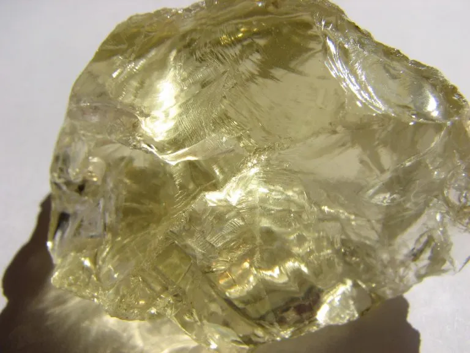

3.5.6 Special properties
are distinctive characteristics that identify some minerals or make them useful.
- Fiber optics: ulexite projects an image through the crystal like a screen.
- Taste: halite (NaCl) is salty; sylvite (KCl) is more bitter.
- : the weight of a specimen relative to an equal volume of water. Weigh it in grams, submerge it in a graduated cylinder, and read the volume of water displaced; since water weighs 1 g/cm³, the ratio gives specific gravity. It is easy in the lab but less useful in the field, except for very dense minerals like galena and gold, which geologists judge by , how heavy a specimen feels for its size.
- Reaction with acid: calcite fizzes in dilute hydrochloric acid; dolomite fizzes only slowly, and only when powdered (Figure 3.51). Geologists who work with carbonate rocks carry a dropper bottle of dilute HCl. Vinegar (weaker acetic acid) also works, with less fizzing.
- Magnetism: magnetite (Fe3O4) is strongly attracted to magnets and can be magnetized; naturally magnetic iron oxide is called lodestone. Ilmenite (FeTiO3) and some hematite are weakly magnetic.
- : light scattering that gives a play of colors, as in labradorite (a variety of plagioclase), opal, pearls, and seashells.
- Striations vs. exsolution lamellae: separate the two feldspars. Plagioclase shows striations on one cleavage face, from twinning (its cleavage angle is slightly off 90°, so twinned zones reflect light at slightly different angles). Potassium feldspar has no striations but may show (perthite): roughly parallel streaks of sodium feldspar (albite) that separated out because Na and K do not fit in the same feldspar structure.
- : some minerals, or trace elements in them, glow in visible light under ultraviolet (black) light (Figure 3.33). Rarer absorbs light and releases it slowly, like a glow-in-the-dark sticker.
- Image projectionulexite
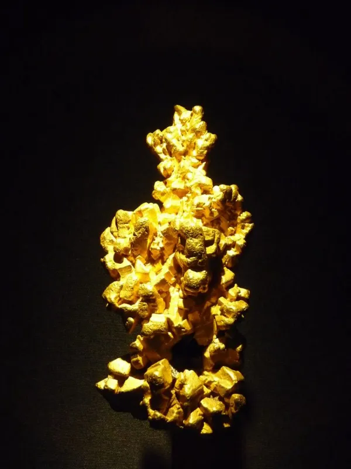
High specific gravitynative gold Magnetismlodestone (magnetite)
Magnetismlodestone (magnetite)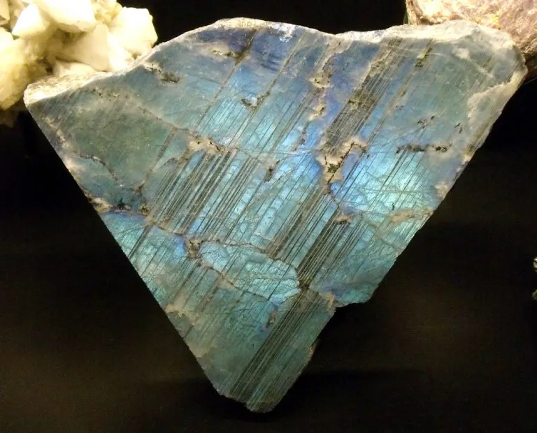
Iridescence, striationsplagioclase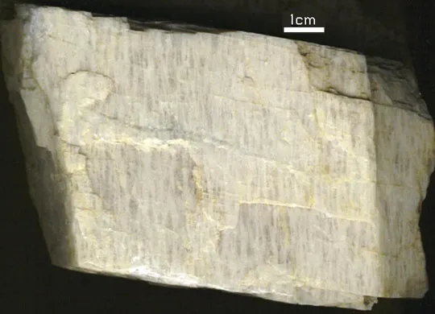
Exsolution lamellaepotassium feldspar Cleavage stepswollastonite
Cleavage stepswollastonite
Check yourself: Section 3.5 quiz in the textbook ↗
Summary
Minerals are the building blocks of rocks, and their properties are set by their atomic bonds. Most minerals begin in a fluid, either crystallizing from cooling magma or precipitating from a saturated solution. Silicates are the largest group by number of varieties and by quantity, making up much of the crust and mantle; their tetrahedral structure reflects the fact that oxygen and silicon are Earth's two most abundant crustal elements. Non-silicates are economically important for construction and manufacturing materials. Minerals are identified by their physical properties: luster, color, streak, hardness, crystal habit, fracture, cleavage, and special properties.
Quick recap
- Mineral: naturally occurring, inorganic, solid, crystalline, defined composition; IMA: "formed as a result of geological processes". Coal, pearl, opal, obsidian are mineraloids.
- Atom: nucleus (protons +, neutrons 0) and electrons (−). Atomic number = protons; atomic mass ≈ protons + neutrons; isotopes differ in neutrons.
- Octet rule: columns I–II give electrons (cations), VI–VII take them (anions), VIII is inert. Ionic bonds transfer electrons (NaCl); covalent bonds share them (CH4).
- Minerals form from water (precipitation at saturation), from magma (crystallization), and by organisms (calcite, aragonite, silica, apatite).
- SiO4 tetrahedron (−4) links as isolated (olivine) → single chains (pyroxene) → double chains (amphibole) → sheets (mica, clay) → frameworks (quartz, feldspar).
- Solid solutions: olivine (forsterite–fayalite), plagioclase (albite–anorthite). Size matters more than charge.
- Non-silicates: carbonates, oxides, halides, sulfides, sulfates, phosphates, native elements; many are ores.
- Identification: luster, color, streak, hardness (Mohs 1–10), habit, cleavage/fracture, special properties (acid, magnetism, taste, specific gravity, fluorescence...).
Check yourself: Chapter 3 review quiz in the textbook ↗
Resources
Fact-check notes
Every statement in this guide was checked against the textbook chapter. Where the chapter differs from current references or contradicts itself, the guide keeps the chapter's value (that is what you will be tested on) unless noted, and lists the difference here.
| Topic | Chapter says | Note |
|---|---|---|
| Mohs scale | Developed by "Fredrick Mohs in the early 20th century" | Friedrich Mohs (1773–1839) introduced the scale in 1812, the early 19th century (Britannica, "Mohs hardness"). The guide gives only his name. |
| Mineral definition | IMA amended the definition "in 1985" | The quoted wording comes from E.H. Nickel's 1995 paper "The definition of a mineral" (Canadian Mineralogist 33: 689–690), the IMA commission's standard. The guide gives no year. |
| Transition elements | "Columns 3 through 15" | Chemistry references usually define the transition elements as columns 3–12 (the d-block). Figure 3.3 colors 3–12 as transition and 13–15 as mostly covalent, which matches the chapter's other statement that columns 3–15 usually bond covalently. |
| Mafic | "A contraction of their chemical symbols Ma and Fe" | Mafic comes from magnesium + ferric (iron); magnesium's symbol is Mg. |
| Inosilicates | Introduced under amphiboles only | Both single-chain (pyroxene) and double-chain (amphibole) silicates are inosilicates. Figure 3.12 labels amphiboles as in the chapter. |
| Heaviest natural element | Uranium (92) | Correct as a common rule; trace plutonium also forms naturally in uranium ores. |
| Diamond iridescence | "Cut diamonds show iridescence" | Gemologists call a cut diamond's rainbow flashes dispersion ("fire"). The guide leaves diamonds out of the iridescence list. |
| Naica crystal | "39 feet (12 meters) and 55 tones" | "Tones" is a typo for tons. The guide gives only the length. |
| Typos in formulas | "CaSo4·2H2O"; "baslt" | Corrected to CaSO4·2H2O and basalt. |
The chapter calls hematite's massive, botryoidal, specular, and oolitic forms "polymorphs". Polymorphs normally means different crystal structures (like calcite and aragonite); hematite's forms are different habits of the same structure. Hydroxycarbonate apatite is written in the chapter as Ca5(PO4)3(OH), the formula of hydroxylapatite; the guide does not give a formula.
Credits
Content summarized from An Introduction to Geology, Chapter 3, © 2017 Chris Johnson, Matthew D. Affolter, Paul Inkenbrandt, and Cam Mosher, licensed CC BY-NC-SA 4.0. This guide is shared under the same license. Images are from the chapter and keep their own licenses, listed in each caption:
- CC BY / CC BY-SA / CC0: as credited in each figure caption.
- Public domain: U.S. government works (USGS, NASA, National Park Service) and others as marked.
- Atom, periodic table, tetrahedron, silicate structures, solid-solution bars, cleavage sketches, and acid-test flowchart: drawn for this guide from the chapter text.
- Images marked "All Rights Reserved" or without a license in the chapter (electron cloud model, element and mineral abundance pie charts, ping-pong tetrahedron models, mica "sandwich", feldspar structure, rotating tetrahedron, ammonite, biotite, periodic table) are not reproduced.